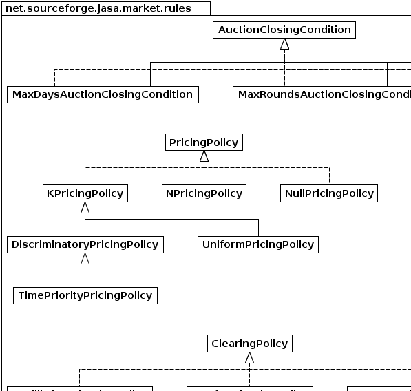
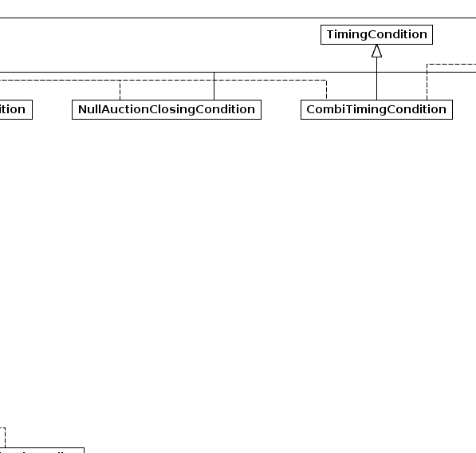
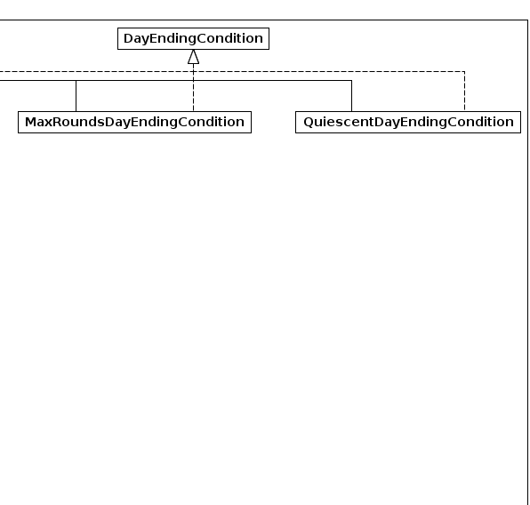
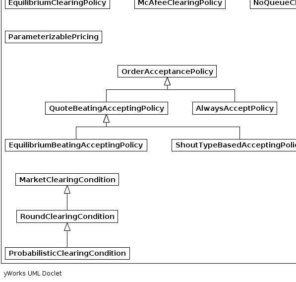
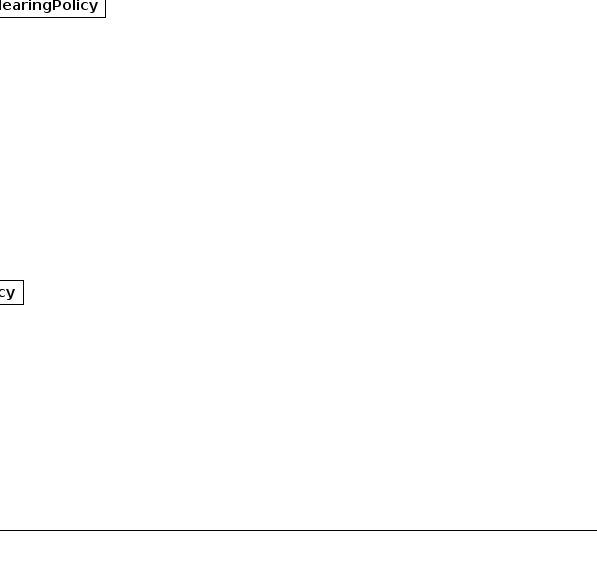
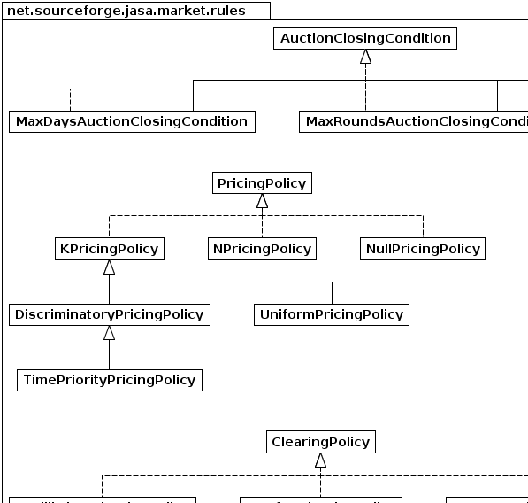
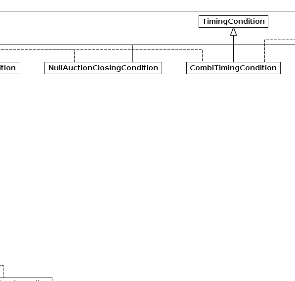
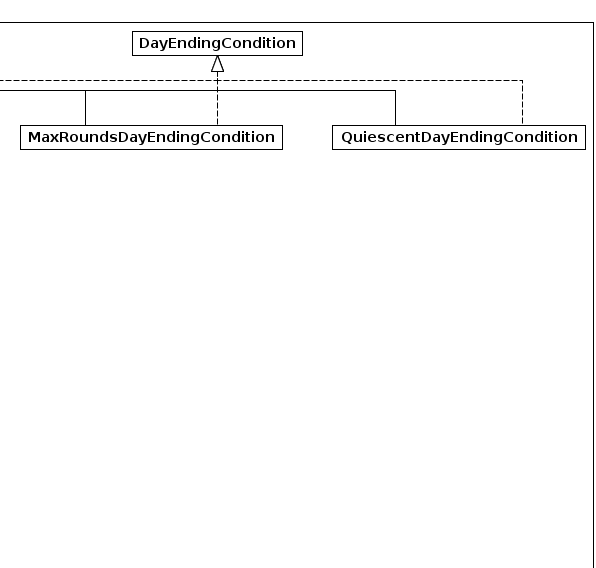
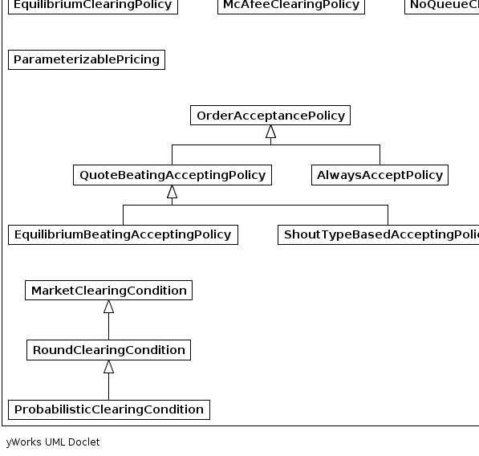
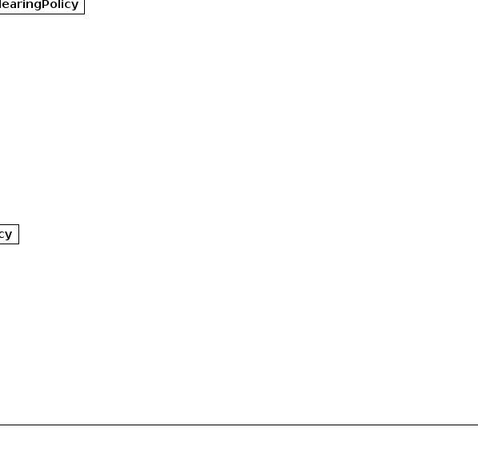

|  |  |  |
|  |  |  |
|
|||||||||
| PREV PACKAGE NEXT PACKAGE | FRAMES NO FRAMES | ||||||||
| Interface Summary | |
|---|---|
| AuctionClosingCondition | The interface for expressing the condition of closing an market. |
| ClearingPolicy | |
| DayEndingCondition | The interface for expressing the condition of ending an market day. |
| ParameterizablePricing | Auctioneer classes implementing this interface indicate that they support parameterisable pricing rules, as per the k-double-market variants. |
| PricingPolicy | Classes implementing this interface define pricing policies for auctioneers. |
| Class Summary | |
|---|---|
| AlwaysAcceptPolicy | the losest accepting policy under which all shouts are allowed. |
| CombiTimingCondition | The class for expressing the combination of timing conditions. |
| DiscriminatoryPricingPolicy | A pricing policy in which we set the transaction price in the interval between the matched prices as determined by the parameter k. |
| EquilibriumBeatingAcceptingPolicy | implements the shout-accepting rule under which a shout must be more competitive than an estimated equilibrium. |
| EquilibriumClearingPolicy | |
| KPricingPolicy | Abstract superclass for auctioneer pricing policies parameterised by k. |
| MarketClearingCondition | The interface for expressing the condition of clearing the current market. |
| MaxDaysAuctionClosingCondition | The interface for expressing the condition of closing an market. |
| MaxRoundsAuctionClosingCondition | The interface for expressing the condition of closing an market. |
| MaxRoundsDayEndingCondition | The interface for expressing the condition of closing an market. |
| McAfeeClearingPolicy | An implementation of the mechanism described in "A Dominant Strategy Double Auction" R. |
| NoQueueClearingPolicy | |
| NPricingPolicy | A discriminatory pricing policy that uses the average of the last n pair of bid and ask prices leading to transactions as the clearing price. |
| NullAuctionClosingCondition | |
| NullPricingPolicy | |
| OrderAcceptancePolicy | Classes implementing this interface define policies for accepting shouts. |
| ProbabilisticClearingCondition | The class for expressing whether the market should be cleared or not. |
| QuiescentDayEndingCondition | The interface for expressing the condition of closing an market. |
| QuoteBeatingAcceptingPolicy | implements the NYSE rule under which a shout must improve the market quote to be acceptable. |
| RoundClearingCondition | The interface for expressing the condition of clearing the current market. |
| ShoutTypeBasedAcceptingPolicy | implements the shout-accepting rule under which a shout must be more competitive than an estimated equilibrium. |
| TimePriorityPricingPolicy | Set the transaction price at the price of the order which arrived at the market first. |
| TimingCondition | The interface for expressing the condition of closing a certain time interval, such as an market, or a day, or whether it's time to do something, i.e. |
| UniformPricingPolicy | A pricing policy in which we set the transaction price in the interval between the ask quote and the bid quote as determined by the parameter k. |
|  |  |  |
|  |  | |
|
|||||||||
| PREV PACKAGE NEXT PACKAGE | FRAMES NO FRAMES | ||||||||